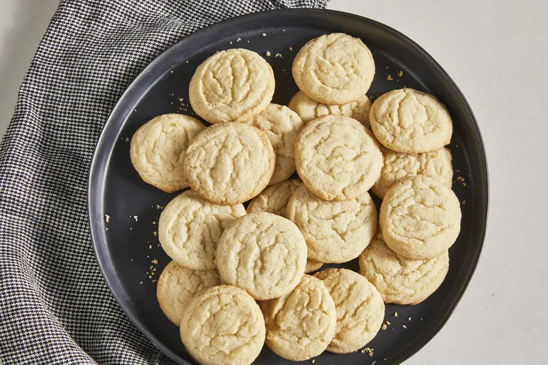

Cookies

Satisfy your sweet tooth with this top-rated sugar cookie recipe. It comes together with just a few pantry ingredients you likely already have on hand, and the cookies bake up soft, tender, and perfectly sweet every time. Whether you keep them simple or decorate them with frosting and sprinkles, this go-to recipe is perfect for holidays, baking with kids, and anytime you want a classic treat.
Ingredients You'll Need for Sugar Cookies
- Flour
- Leeaveners
- Butter
- Sugar
- Egg
Directions
- Gather all ingredients. Preheat the oven to 375 degrees F (190 degrees C).
- Stir flour, baking soda, and baking powder together in a small bowl.
- Beat sugar and butter together in a large bowl with an electric mixer until smooth.
- Beat in egg and vanilla
- Gradually blend in floour mixture
- Roll dough into walnut-sized balls and place 2 inches apart onto ungreased baking sheets.
- Bake in the preheated oven until edges are just golden, 8 to 10 minutes. Cool on the baking sheets briefly before removing to a wire rack to cool completely.
Home